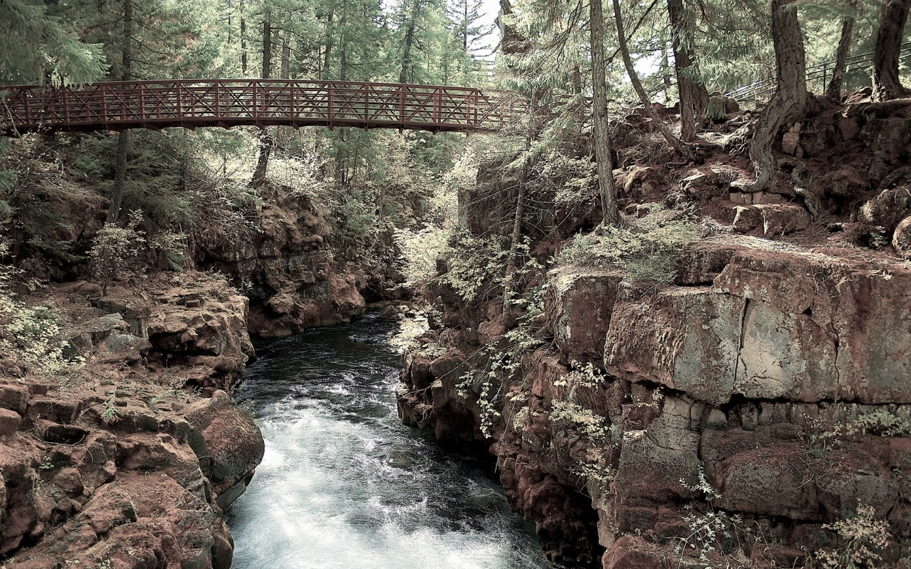

Developer Skills

HMTL5 and CSS3
This is a wider card with supporting text below as a natural lead-in to additional content. This content is a little bit longer.
Card title
This card has supporting text below as a natural lead-in to additional content.
Card title
This is a wider card with supporting text below as a natural lead-in to additional content. This card has even longer content than the first to show that equal height action.